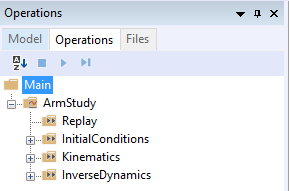

Introduction: A Study of Studies
Contents
Introduction: A Study of Studies#
Studies and operations are AnyBody’s mechanisms for specifying “things to do to the model”. The study is the “collector“, in the sense that a study collects a model definition with the operations that executes the model and the results to investigate afterwards. Operations are the things you can do to the model; they can be executed from the AnyBody interface and while they run output is generated and stored in the study according to the function of the specific operation.
Why does AnyBody have studies? You might expect that you could just load a model and then operations would simply be available in the AnyBody interface. But why are studies then defined as special classes? Why do you need to declare then manually in the model?
The reason to have studies as a special class is basically that you can have multiple studies in the same model. Since studies become objects in the model, there can be as many as you need (or your computer can manage which is depending on the model size) and they do not need to comprise (operate on) the same model definition even though they share elements.
A simple example of the usage of multiple studies is to perform to different operations on the same model, or to perform the same operation on almost equivalent models, and subsequently comparing the results. With two studies, this can be done in a single AnyBody model.
Studies are derived from the base class called AnyStudy and the operations you find inside the studies are also defined as class; all derived from the base class AnyOperation.
AnyBody’s family of study classes looks like this:
AnyStudy (Base class for all studies)
AnyTimeStudy (Base class for time variation studies)
AnyMechStudyBase
AnyKinStudy
AnyMechStudy
AnyBodyStudy
AnyBodyCalibrationStudy
AnyDesStudy (design variable studies, see a separate tutorial)
In this tutorial, we shall focus on time varying studies and in particular mechanical studies that deal with the analysis of mechanical system. The other major branch of studies are design studies that deal with variations of design parameters for instance as parameter studies and even optimization. A special tutorial is however devoted to this topic typically design studies will build on top of the analyses performed by other studies, such as mechanical studies.
The mechanical studies (derived from AnyMechStudyBase) are all very similar, except that they contain different sets of available operations. The base class is empty; AnyKinStudy extents this with functionality for kinematic analysis. AnyMechStudy further extents this with kinetic (dynamic) analysis of basic mechanical systems.
AnyBodyStudy is the must frequently used study by AnyBody users, since this study extents the kinematic analysis functions with operations for kinetic (dynamic) analysis of musculoskeletal systems, i.e., the core functionality of the AnyBody Modeling System. AnyBodyCalibrationStudy contains assisting functionality in this regard.
AnyMechStudy1 and AnyBodyStudy1 are deprecated versions of AnyMechStudy and AnyBodyStudy, respectively, and we shall not consider these any further in this tutorial.
In this tutorial, we shall use AnyBodyStudy as starting point because of its very central role in the system and for most users, and because it contains almost collective set of the operations that are also found in the other mechanical studies. Notice however that a special tutorial, Inverse Dynamics of Muscle Systems, is devoted to topic of musculoskeletal simulation, so we shall not go into details with this here.
The AnyBodyStudy and Studies in general#
A study is really just a folder. It is a pair of braces between which you can place some specifications. Whatever you put between the braces becomes part of the study. As every object, a study has some predefined properties that you either can set, must set, or cannot touch.
When you create a new model by means of the menus File -> New from Template..., the
system automatically inserts an AnyBodyStudy for you (please do it and
save the file under some relevant name). It looks like this:
// The study: Operations to be performed on the model
AnyBodyStudy MyStudy = {
AnyFolder &Model = .MyModel;
Gravity = {0.0, -9.81, 0.0};
};
It contains all the things you formally need. Let’s start with the last line
Gravity = {0.0, -9.81, 0.0};
The line assigns a value to the variable ‘Gravity’, which is a
specification of the vector of gravitational acceleration affecting the
model. The variable has no type definitions in front of it since it is a
predefined property of the AnyBodyStudy object. The system assumes that
you want to work with the y axis being vertical in space. If you prefer
otherwise, simply change the direction of Gravity to reflect your
choice. Please go ahead and load the model if you have not already done
it by pressing F7 or the  icon.
icon.
An AnyBodyStudy has many more predefined properties that you can play with. You can get an overview of these using the Model Tree View, which is attached to the left of the Main Frame. Double-clicking any object in the Model Tree will show you properties of the objects in the Object Description dialog box.
Most of the properties deal with solution methods, tolerances, and other stuff that is necessary or handy for advanced users. For a description of each property, please refer to the AnyScript Reference manual. A few of the properties, however, are necessary to know even for casual users and they are common for all mechanical studies:
tStart |
This is the time at which the study begins. In almost every case, this would be zero. Using a non-zero value of tStart is sometimes used to restrict the study to a subset of the time is was originally developed for or if the model is driven by measured data which does not begin at t = 0. |
|---|---|
tEnd |
Ah, you guessed it already. This is the time at which the study ends. Contrary to tStart, this often has to be set by the user. The standard value is tEnd = 1.0, and if you want your study to span any more or less time, you have to set tEnd manually. A very common modeling mistake is to define data-based drivers such as the AnyKinEqInterPolDriver with a time span exceeding the interval from 0 to 1 and then wondering why only a small part of the movement interval gets simulated. In this case, the user must manually specify tEnd to correspond with the end of the driver time span. |
nStep |
AnyBody analyzes movement in discrete time steps, and nStep specifies how many steps the system should use to come from tStart to tEnd. The steps are equidistant, and since tStart is always the first analysis time, and tEnd the last, the interval gets divided into nStep-1 equal intervals. The default value is nStep=100, which for most purposes is a very fine resolution. If you have a large and time-consuming model, it might be a good idea to manually set nStep to a smaller number. |
The first line of the study reads
AnyFolder &Model = .MyModel;
Notice that the first word of that line is a type definition: “AnyFolder”. The predefined properties we have just discussed need no type definition because the study already knows them. They are already defined and merely get new values by the assignments we may specify. So the type definition at the beginning of this line indicates that this property is an addition to the study; something that was not known already. This is an important point to understand about studies: You can add almost anything to a study and the study does not need to know its type in advance.
The significance of adding something to a study is that whatever you add becomes a part of what the study executes. This particular line defines a variable called “Model” and sets it equal to .MyModel. If you look at the beginning of the AnyScript file, you will see that MyModel is really the folder containing the entire model the system has generated for you (we refer to it as .MyModel with a leading dot because it is one brace up compared to where it is referenced from). This means that the entire model comes under influence of the study. Instead of this line, we could simply have pasted the entire contents of the braces defining the MyModel in at this place, and in some sense, this is precisely what we have done. The ampersand ‘&’ in front of “Model” means that Model does not get replicated inside the study. Instead, the ‘&’ means that the study merely contains a pointer to MyModel. The concept of pointers should be very familiar to you if you have any experience in C, C++, or Java programming. If not, simply think of a pointer as a handle to something that’s defined elsewhere. Whenever you access it, you are actually handling what it is pointing to.
Instead of including the entire model, we could have chosen to point to some of the sub folders of MyModel. This would mean that the study would work on just a subset of the model, and it can be very relevant in some cases. For instance, as mentioned earlier, you may want to compare to almost identical models; in this case you can collect all common parts in one folder and the distinctive parts in each separate folder and two studies can easily be made with references to the common part and their respective distinctive part. Special studies that are used to initialize properties in the model, is also a case where it is indeed useful to be able to point to parts of the model. Muscle property calibration is such a case, which we shall look at in a special lesson of the InverseDynamics of Muscle Systems tutorial.
The elements of a study#
When you define an AnyBodyStudy, regardless of what you include between the braces of the study, the result is three standard operations that appear in the study tree. They each represent something you can do to the model elements the study is pointing at:
Operation InitialConditions reads the values of whatever drivers you have included in the study and puts the model in the position of these drivers at time tStart. This is done in a multi-step process: The model is initialized into the initial positions from load time, and the kinematics is subsequently solved in a few steps. This is particularly useful for inspection of the specified initial positions when having problems with the initial configuration of the mechanism.
Operation Kinematics. A kinematic analysis is a simulation of the movement of the model without calculation of any sort of forces. This means that you can run Kinematics as soon as you have the movement defined uniquely. You don’t need any muscles in the model for this one.
Operations InverseDynamics. This is a simulation of the forces involved in the given movement or posture and whatever can be derived from them. The InverseDynamics operation uses the Kinematics operation as a subroutine, so this requires a correctly defined movement or posture as well as the muscles or motors necessary to drive the model.
Each of these operations, when executed, assembles the output they generate in the Output section under the study’s tree.
Running operations#
You execute operations through the wide, narrow control pane that’s usually located at the bottom of the screen. This is usually referred to as the Operation Window.

The lower portion of this pane is just the message window where the system writes various messages and dumps object properties when you double-click them as we did before with the entire study. The left of the upper fields is a filtered version of the tree you can find on the left side of just about any window in the AnyBody Modeling System. Rather than presenting all the objects of the model, this tree only comprises the studies. If you expand a study, you will find its operations, which typically are: InitialConditions, Kinematics, and InverseDynamics.
You pick an operation by clicking it once. This highlights its name, and you can now execute it with the Run or Step buttons in the right hand field. The “Run” button starts the study and it will run until it comes to its end or encounters an error. Once you press the run button, it changes its name to “Break”, and pressing it in that state breaks the current analysis process.
The “Step” button takes one step at a time. What a step is exactly depends a little on the type of operation. For Kinematics and InverseDynamics a step is one time step of the movement. For InitialConditions, a step is one of the several distinct operations necessary to put the model into its initial state. We shall return to that subject in the next lesson.
The “Reset” button returns the model to its initial state after it has gone through a sequence of time steps. You must press “Reset” before you can rerun the model.
In the following lessons we shall look in more detail at the different functionality in an AnyBodyStudy.
We need a model with a bit more substance than the template we created
above. If you do not already have our trusted arm model stored
somewhere, please download it here, save it to your disk, and load it
into AnyBody.
We are then ready to proceed to Lesson1: Mechanical System Information.